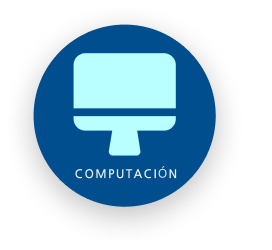
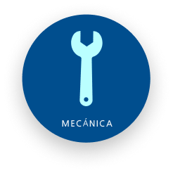
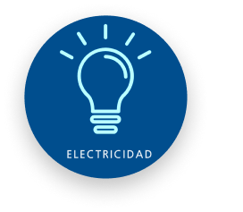

¡BIENVENIDO A LA ESCUELA TÉCNICA N°29!
RECONQUISTA DE BUENOS AIRES
Formamos técnicos con excelencia, innovación y compromiso social. Una institución educativa que impulsa el aprendizaje profesional desde la práctica cotidiana.
¿POR QUÉ ELEGIRNOS?
Formación Técnica de Excelencia
Elegir la Técnica N°29 es optar por una formación técnica de excelencia dentro del modelo de la "Secundaria del Futuro". Nuestra escuela ofrece títulos en Mecánica, Electricidad y Computación, brindando a los estudiantes una preparación sólida para el mundo laboral y académico.
Compromiso y Aprendizaje Práctico
Contamos con un gran taller central y amplias aulas de computación que garantizan prácticas reales y un aprendizaje de calidad. Además, funcionamos con jornada completa y somos una "Escuela Consagrada" por nuestro compromiso con la educación ambiental y la formación integral de profesionales del futuro.
Construí tu Futuro con Nosotros
En la Técnica N°29 formamos jóvenes con vocación, innovación y compromiso. Te invitamos a ser parte de una comunidad educativa que impulsa el crecimiento personal y profesional desde la práctica y la excelencia.
ESPECIALIDADES

COMPUTACIÓN
Formación en programación, redes y hardware, integrando la tecnología al servicio del conocimiento.
Ver especialidad
MECÁNICA
Diseño, operación y mantenimiento de sistemas mecánicos y herramientas industriales.
Ver especialidad
ELECTRICIDAD
Capacitación en instalaciones, mantenimiento y proyectos eléctricos con orientación profesional.
Ver especialidad